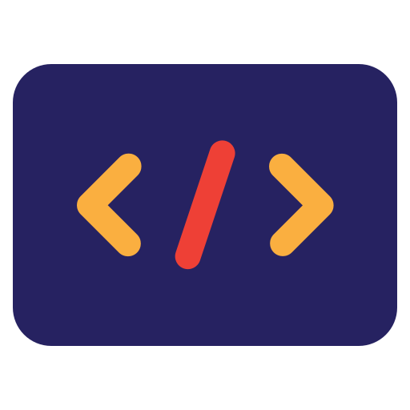
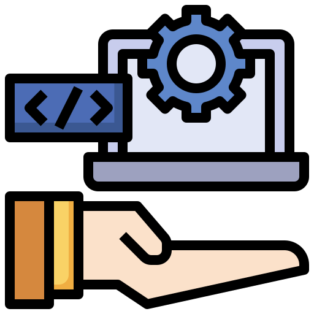

Product
SDEK팀의 제품은 사용자 경험을 최우선으로 고려한 혁신적인 소프트웨어 솔루션입니다. 웹 애플리케이션부터 모바일 앱에 이르기까지 다양한 플랫폼을 지원하며, 최신 기술을 활용한 최적화된 서능과 직관적인 디자인을 자랑합니다. 우리는 다양한 비즈니스 요구에 충족시킬 수 있는 맞춤형 소프트웨어를 제공합니다.
The SDEK team offers innovative software solutions that prioritize user experience. From web applications to mobile apps, our products support various platforms and are optimized for performance with intuitive design. We provide custom software that meets a wide range of business needs.

Services
SDEK팀은 풀스택 개발 서비스를 제공하여, 프로젝트의 기획 단계부터 배포 및 유지보수까지 전 과정을 지원합니다. 웹 개발, 모바일 앱 개발, 클라우드 서비스, 데이터베이스 설계등 다양한 분야에서 전문적인 솔루션을 제공합니다. 또한 사용자의 요구를 철저히 반영하여 최적화된 결과물을 보장합니다.
SDEK provides full-stack development services, supporting the entire process from project planning to deployment and maintenance. We offer expertise in web development, mobile app development, cloud services, database design, and more. We ensure that our solutions are tailored to meet the specific needs of our clients for optimal outcomes.

Contact
SDEK팀과의 협업이나 문의 사항이 있으시면 언제든지 연락해 주십시오. 우리는 고객의 의견을 소중히 여기며, 신속하고 친절하게 대응할 준빈가 되어 있습니다. 이메일, 전화 또는 소셜 미디어를 통해 쉽게 접근할실 수 있습니다. 이메일: merci726@yahoo.com
Feel free to reach out to the SDEK team for collaboration or any inquiries. We value our clients’ feedback and are always ready to respond quickly and professionally. You can contact us via email, phone, or social media for easy access. Email: merci726@yahoo.com
Portofolio
SDEK팀은 다양한 산업 분야에서 성공적인 프로젝트를 수행해 왔습니다. 우리의 포토폴리오에는 사용자 중심의 웹사이트, 모바일 애플리케이션, 그리고 기업 맞춤형 솔루션들이 포합되어있습니다. 모든 프로젝트는 사용자의 요구에 맞춰 세심하게 설계되었으며, 높은 품질과 신뢰성을 자랑합니다. 저희의 이전 작업을 통해 SDEK팀의 역량을 확인해 보세요.
The SDEK team has successfully completed projects across various industries. Our portfolio includes user-centric websites, mobile applications, and custom solutions for enterprises. Each project has been meticulously designed to meet the specific needs of the user, ensuring high quality and reliability. Check out our previous work to see what SDEK can do for you.